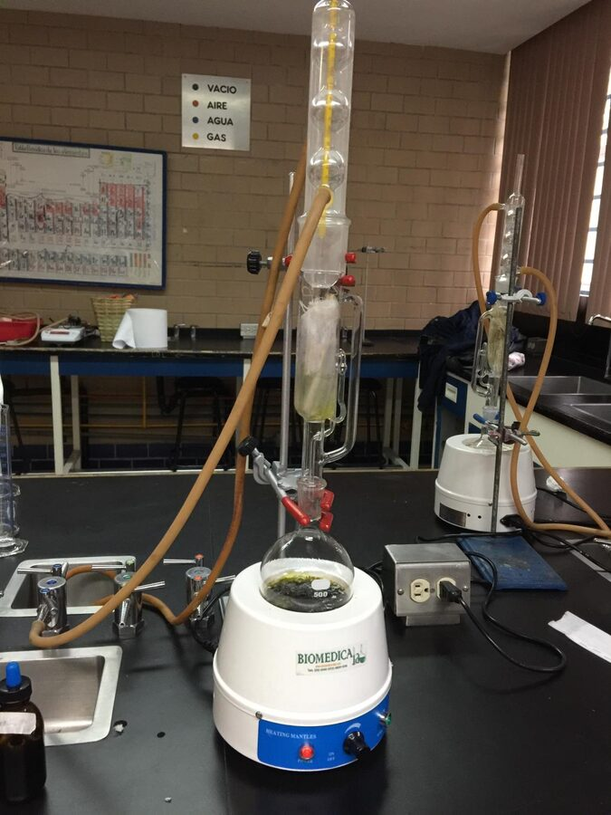
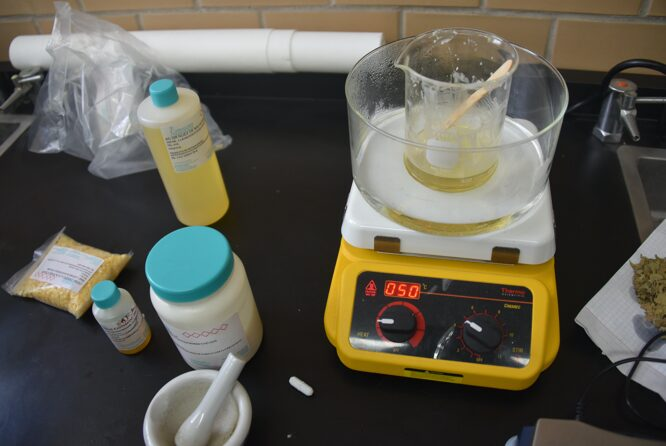
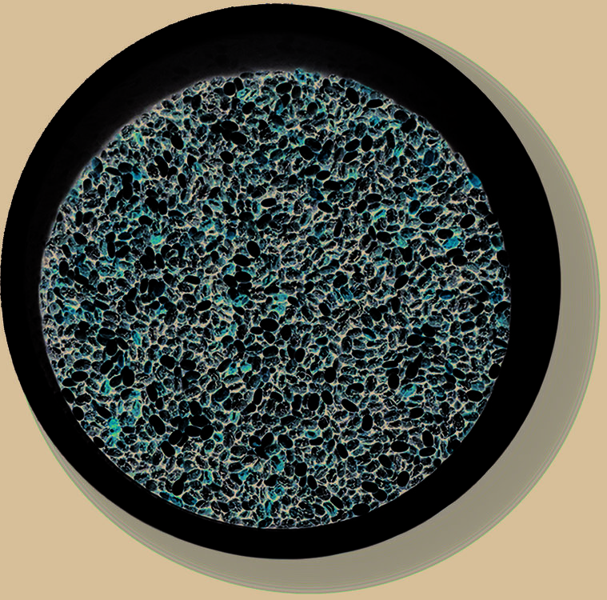
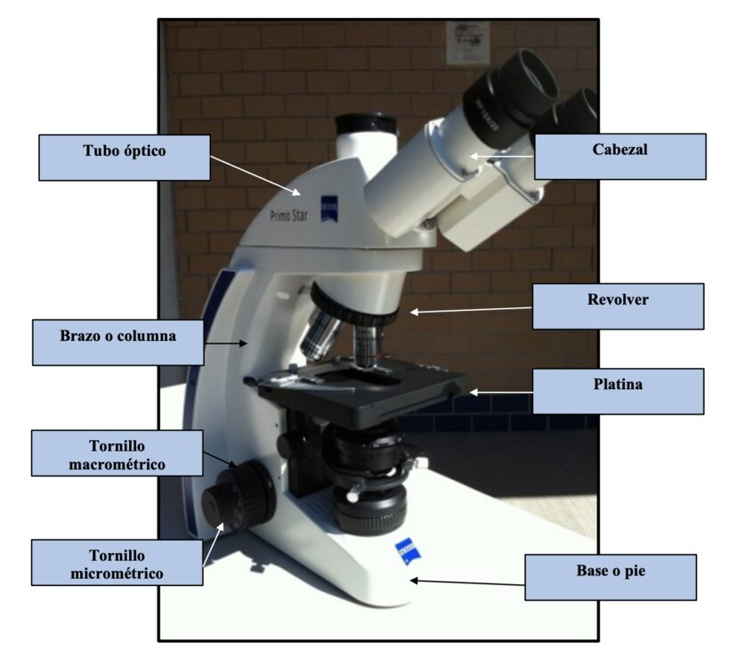
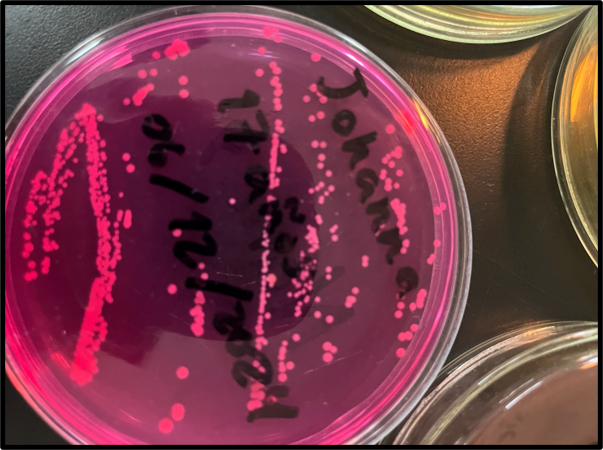
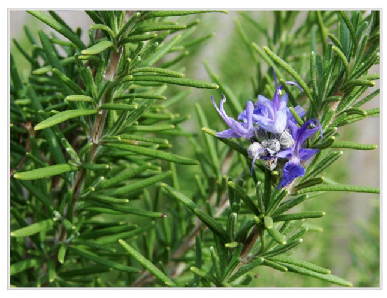

Indagación
Preguntas, hipótesis y experimentación conectadas con situaciones reales.
Ciencia · tecnología · sustentabilidad
Un seminario interdisciplinario del CCH Plantel Sur que reúne docencia, experimentación y herramientas digitales para investigar y comunicar conocimiento.

El seminario
Somos un grupo interdisciplinario de docentes y estudiantes del CCH Plantel Sur que desarrolla proyectos de investigación escolar en ciencia, tecnología y sustentabilidad. En ACHTLI colaboramos desde Biología, Química, Cómputo, Ciencias de la Salud, Talleres e Inglés.
Cada disciplina aporta herramientas para que el estudiantado transforme preguntas de su entorno en proyectos que pueda planear, poner a prueba y comunicar. El trabajo integra formulación de hipótesis, análisis de observaciones y recursos digitales para organizar datos y presentar resultados.
Preguntas, hipótesis y experimentación conectadas con situaciones reales.
Perspectivas de distintas áreas para enriquecer la investigación escolar.
Datos, gráficas y recursos digitales para compartir hallazgos con la comunidad.
Una comunidad que investiga
El seminario imparte cursos para docentes y estudiantes, participa en encuentros y jornadas de divulgación y comparte experiencias didácticas. En las actividades se abordan también la ecología, el cuidado del agua y del suelo, y el manejo de residuos.
Proyectos académicos
Experiencias de investigación escolar
Presentaciones resumidas y anonimizadas para compartir el sentido académico de cada proyecto.
 Grana cochinilla
Grana cochinillaCosmética natural · Biología y Química
Elaboración experimental de un bálsamo labial con ingredientes naturales y pigmento de grana cochinilla.
Conocer el proyecto Plantas y productos naturales
Plantas y productos naturalesSustentabilidad · Investigación escolar
Exploración de extractos vegetales y su aplicación en productos elaborados a partir de una base de glicerina.
Conocer el proyectoLos documentos originales de proyectos contienen datos de participantes; por eso esta propuesta muestra solo síntesis sin información estudiantil.
Materiales didácticos
Actividades y estrategias
Cada material se abre como una página HTML independiente, pensada para consulta en distintos dispositivos.

Precipitación de ovoalbúmina y caseína para estudiar solubilidad y punto isoeléctrico.
Abrir material
Actividad experimental para explorar el DNA en muestras de origen vegetal y animal.
Abrir material
Estrategia de indagación sobre microorganismos, salud, biotecnología y ambiente.
Abrir material
Extracción de compuestos bioactivos con enfoque de química verde y sustentabilidad.
Abrir material04 · Materiales interactivos
Aquí encontrarás cuatro recursos experimentales en eXeLearning. Cada tarjeta abre una actividad con contenidos, imágenes y propuestas de trabajo.
Cuatro actividades interactivas disponibles Actividad experimental I · Biología IExtracción de proteínas: albúmina y caseínaAbrir actividad
Actividad experimental I · Biología IExtracción de proteínas: albúmina y caseínaAbrir actividad Actividad experimental II · Biología IObtención de DNA de tejidos vegetales y animalesAbrir actividad
Actividad experimental II · Biología IObtención de DNA de tejidos vegetales y animalesAbrir actividad
Microbiología · Biología I¡Los microorganismos se encuentran en…!Cultivo, siembra, inoculación y aislamiento de microorganismos.Abrir actividad
Botánica · Química verdeObtención de principios activos de plantasExtracción de compuestos bioactivos y elaboración de productos naturales.Abrir actividadParticipa en ACHTLI
Estudiantes y docentes del CCH Plantel Sur pueden acercarse al SILADIN para conocer los proyectos, cursos y actividades de divulgación del seminario.
Créditos
Escuela Nacional Colegio de Ciencias y Humanidades · Plantel Sur
El diseño y los contenidos originales de esta propuesta se comparten bajo Creative Commons Atribución-NoComercial-CompartirIgual 4.0 Internacional (CC BY-NC-SA 4.0).
Los materiales de eXeLearning integrados conservan la licencia indicada en cada recurso (CC BY-SA 4.0).